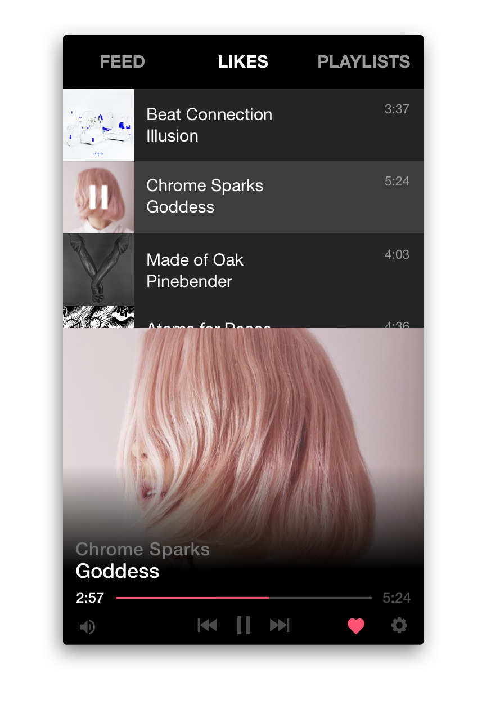

Unobtrusive
Nimbus tucks neatly away into your menu bar - keeping your desktop free of clutter and distraction.
Subtle
A quick notification shows when you start a new song, so you can get right back to your work.

Simple
Use your media keys to play, pause, and skip songs at any time. No need to stop what you're doing.
Responsive
It's also really fast, thanks to the technologies that power it.
Interested? Take a look under the hood.